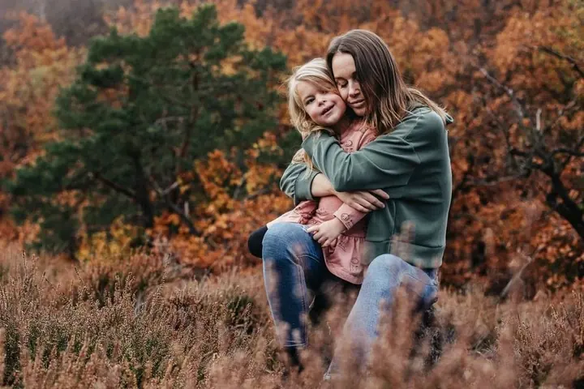

Rodinné focení
Rodinné focení je pro mě příběh vaší rodiny, a proto vám nedávám jen 10 nebo 15 fotek. Fotím venku nebo u vás doma, přirozeně a bez dřevěných bedýnek.

Jmenuji se Kristýna Hadačová a fotím rodiny, páry i svatby v Praze a okolí. Nejvíc mě baví dětská bezprostřednost a upřímný smích, proto fotím ráda venku a vždycky přirozeně.
Rezervovat termínMiluji fotit dětskou bezprostřednost, nevinnost a upřímný smích. Baví mě ale i párové a těhotenské focení a svatby, kde chci zachytit hlavně uvolněnou atmosféru celého dne.


Jsem pro absolutní přirozenost. Chlupaté dečky, dřevěné bedýnky a strojené pózy u mě nečekejte. Nejraději fotím venku, třeba na skalách nad Prahou nebo v Roztokách, ale ani focení doma se nebráním.
Rodinné focení je pro mě příběh vaší rodiny a 15 fotek na něj prostě nestačí. Proto si favority vybíráte až v hotové, upravené galerii a balíček volíte teprve ve chvíli, kdy fotky vidíte.
Co fotím
Rodinné focení je pro mě příběh vaší rodiny, a proto vám nedávám jen 10 nebo 15 fotek. Fotím venku nebo u vás doma, přirozeně a bez dřevěných bedýnek.
Z vašeho nejdůležitějšího dne chci zachytit přirozenost a uvolněnou atmosféru. Celodenní focení trvá 8 hodin a dostanete z něj 400 až 500 upravených fotek.
Fotím procházku ve dvou, rande nebo očekávání miminka. Venku, v klidu a bez nepřirozených póz.
Fotím také firemní a společenské akce. Napište mi, o jakou akci jde, a domluvíme se.
Fotografie jsou ilustrační
Postup
Nejlépe e-mailem, přes Instagram nebo formulář. U svatby mi prosím napište, kde se bude konat a jestli chcete celodenní, nebo kratší focení.
Navrhnu vám místa podle toho, co je vám blízké: město, příroda nebo domov. Poradím vám i s oblečením, protože tvoří podstatnou část výsledné fotky.
Rodinné focení trvá kolem hodiny, s dětmi někdy i déle, párové bývá kratší. Nikam nespěcháme, děti si můžou hrát a vy si to užít.
Nejpozději do dvou týdnů vám pošlu pozvánku do galerie s už upravenými fotkami. Pak si vyberete favority i balíček a vyvolané fotky vám přijdou Zásilkovnou.
Otázky
Balíček Základní se 45 upravenými fotkami stojí 5 000 Kč, Medium s 60 fotkami 6 000 Kč a Large s celou galerií (vždy alespoň 100 fotek) a 50 vyvolanými fotkami 7 000 Kč. Párové Rande s 15 fotkami stojí 3 500 Kč.
Protože o víkendech fotím svatby, rodinná a párová focení dělám jen v týdnu, v čase podle domluvy.
V případě opravdu špatného počasí najdu nejbližší možný náhradní termín.
Dělám drobné retuše. Vrásky ani proporce těla neupravuji, chci, abyste na fotkách byli sami sebou.